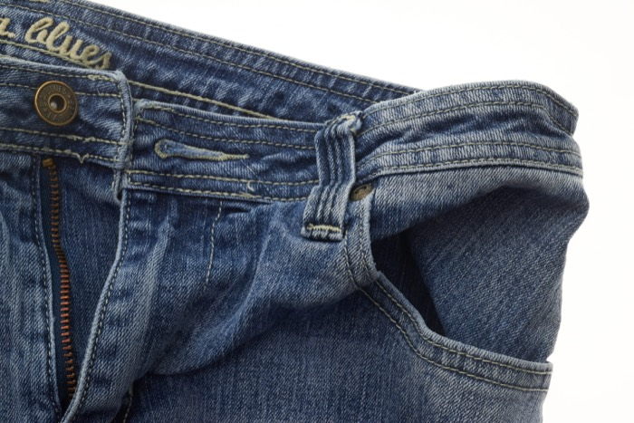
Pantalons
- Canvi de cremallera
- Estrènyer cintura
- Baixos de pantaló
- Estrènyer camal
Som el taller de costura familiar de Can Baró. Cosim bosses i accessoris únics, arreglem i transformem la teva roba — i la recollim i la lliurem a casa teva, a Can Baró, el Guinardó, el Carmel, Gràcia i tota Barcelona.
4,9 · 86 ressenyes a Google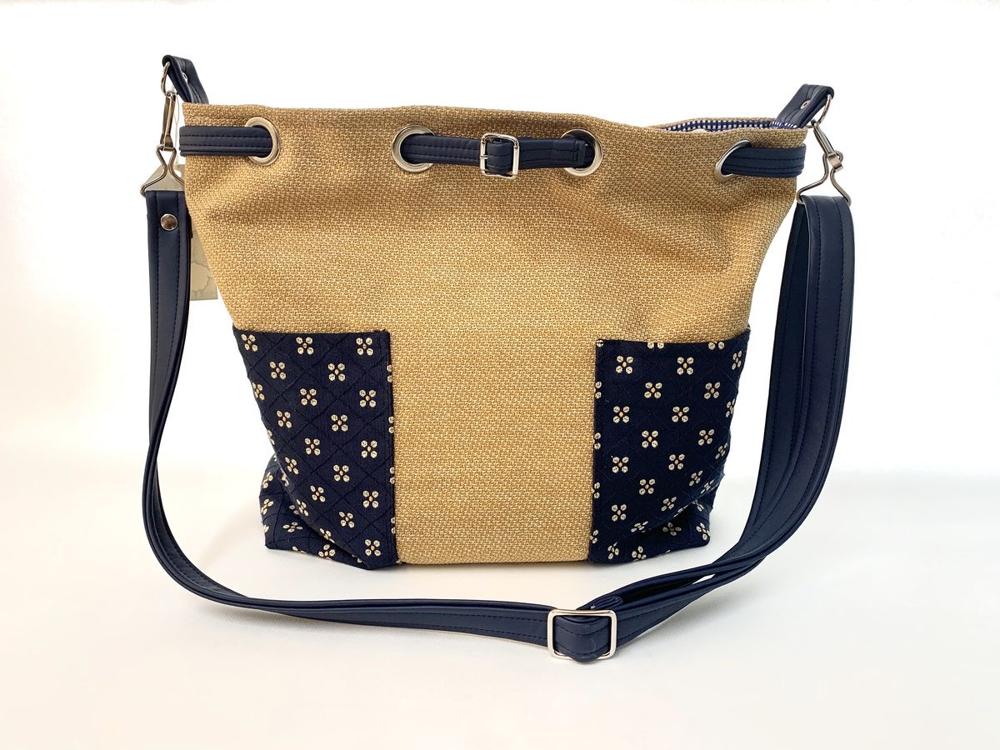
Cada peça es cus per encàrrec al nostre taller de Can Baró: tu tries teles, colors i detalls (un brodat amb el seu nom?), i nosaltres li donem vida. També transformem peces amb història en bosses noves — upcycling amb estima.
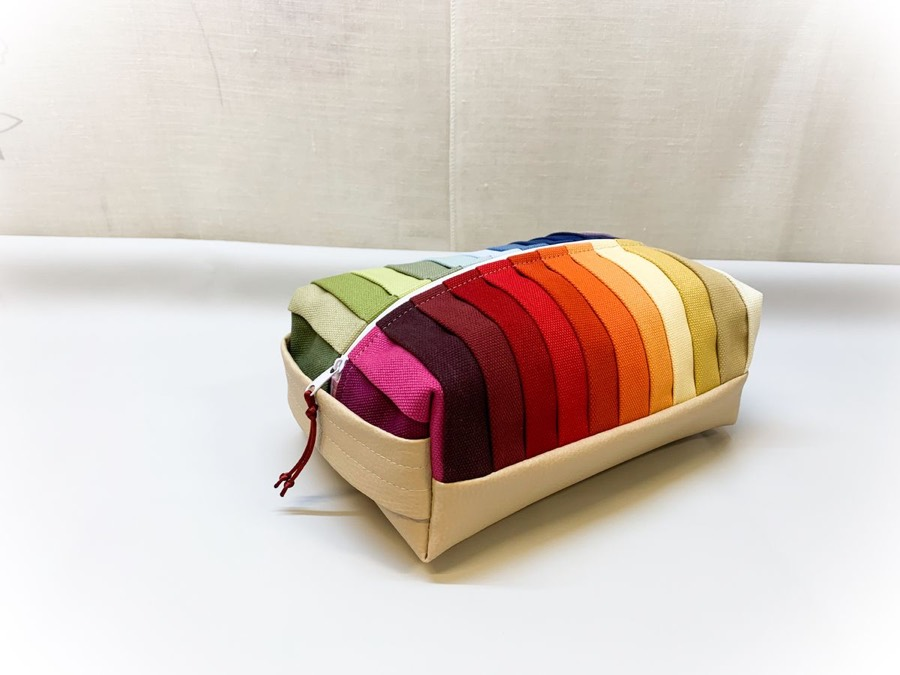
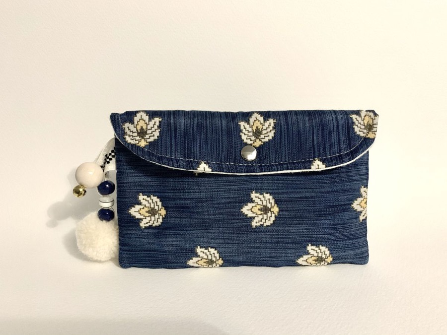
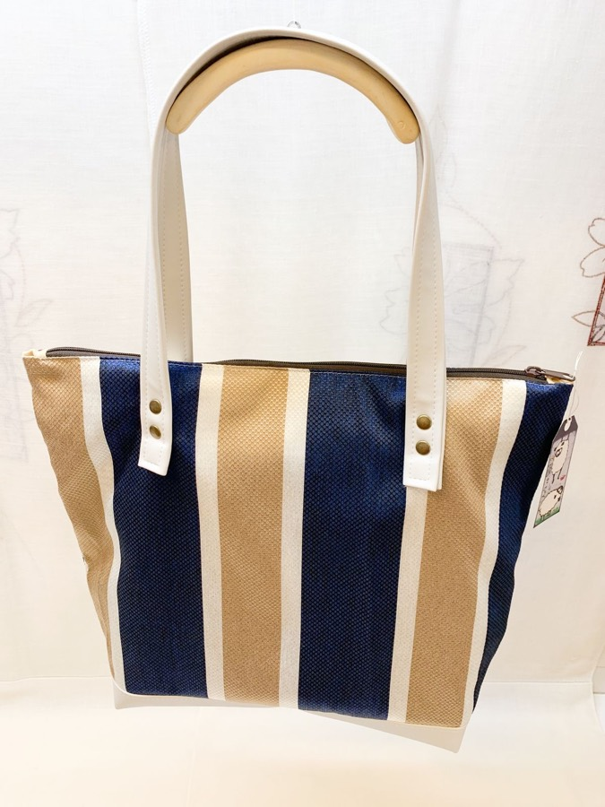
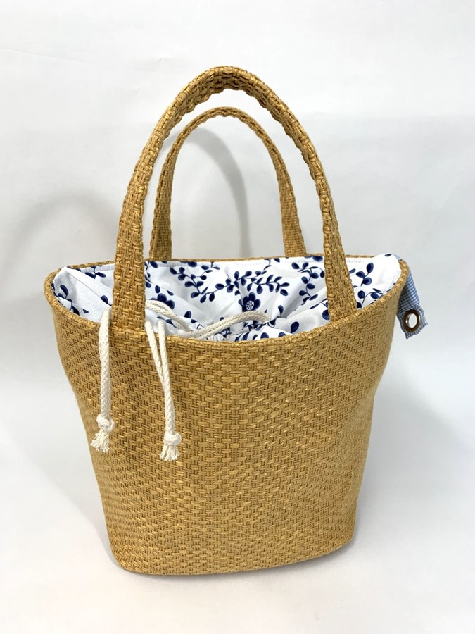
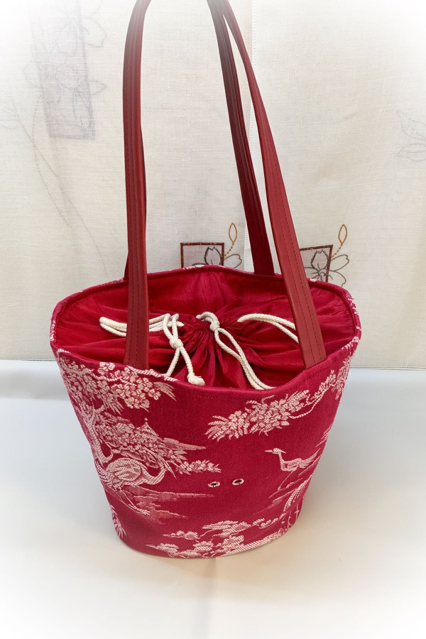
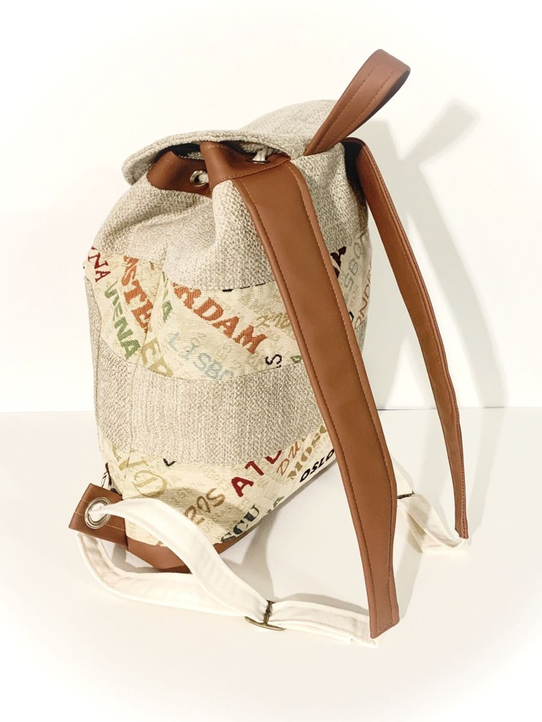
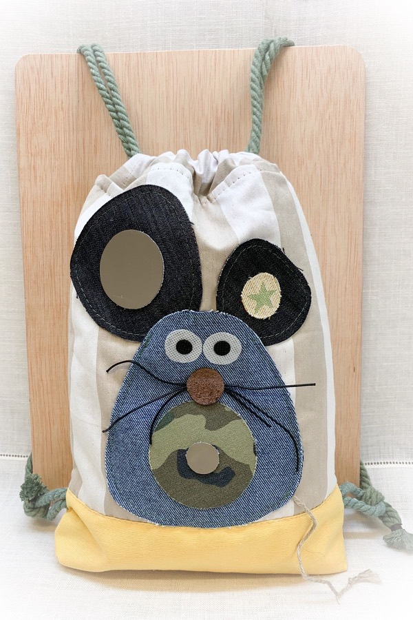
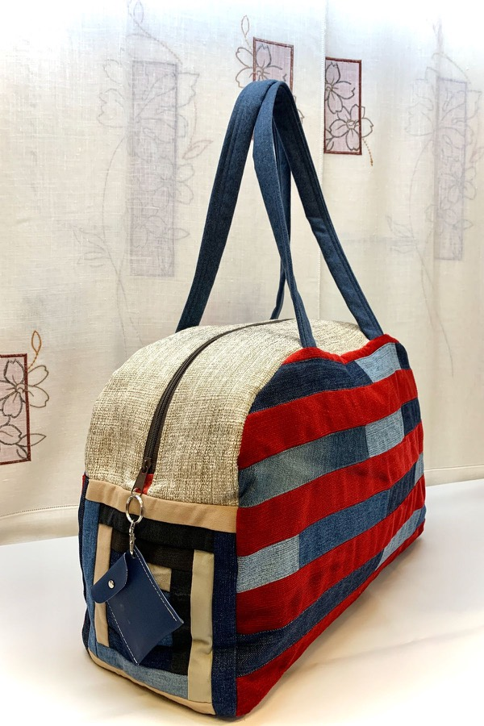
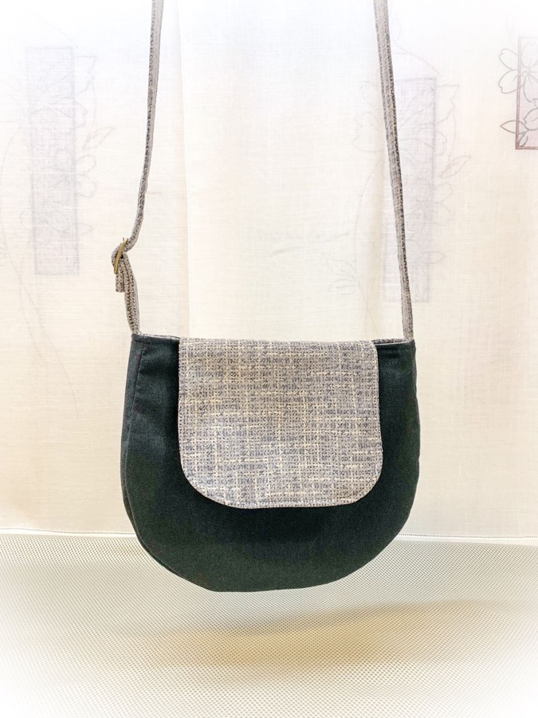
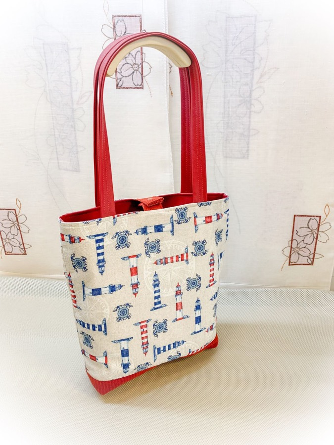
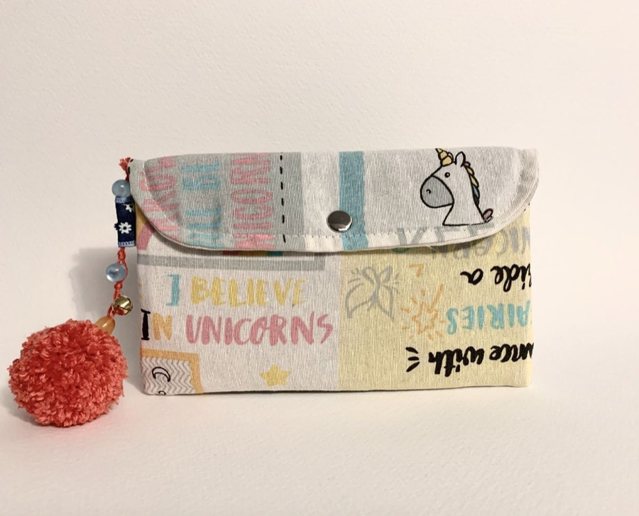
Tens una idea?
La cosim junts
Arreglem tota mena de peces perquè et quedin com un guant, amb recollida i lliurament a domicili a tota Barcelona.

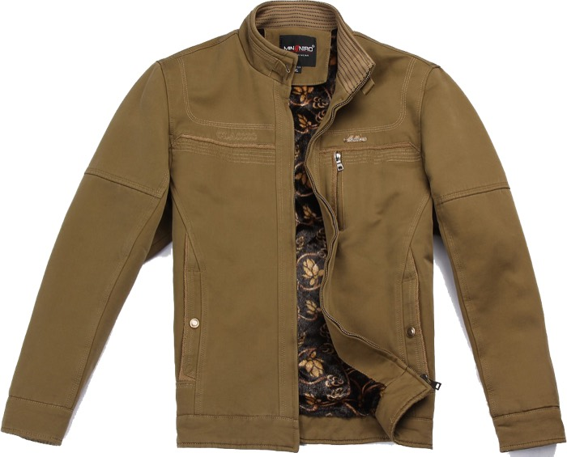
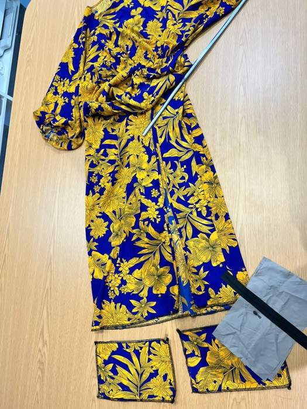
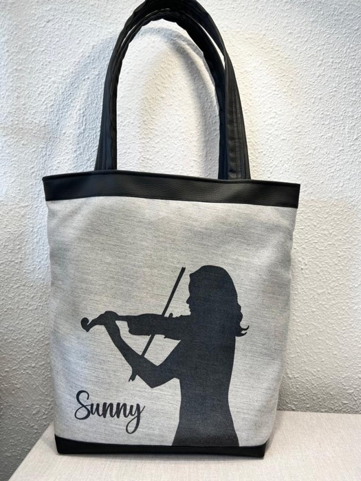
Una urgència abans d'un esdeveniment? Explica'ns-ho per WhatsApp i farem tots els possibles.
Treballem amb cita prèvia per dedicar a la teva peça el temps que es mereix.
Explica'ns per telèfon o WhatsApp què necessites i busquem junts el millor moment per passar a recollir la teva peça.
Passem per casa teva a Can Baró, el Guinardó, el Carmel, Gràcia o qualsevol punt de Barcelona.
Et lliurem la peça arreglada, revisada i a punt per estrenar de nou.
A Can Baró, la recollida i el lliurament són gratuïts. A la resta de Barcelona, només 5 € en total (recollida + lliurament). Horari: de dilluns a divendres de 10.00 a 14.00 i de 15.00 a 19.00.
Demana una recollidaSom un taller de costura familiar nascut al barri de Can Baró, amb anys d'experiència al sector de la moda. Ens apassiona donar una segona vida a les peces: arreglem, transformem i creem complements únics amb les mans i amb el cor.
Des que treballem a domicili, portem el taller allà on ens necessitis: la teva roba viatja, tu no.
Vam tenir l'honor de confeccionar el vestuari de @trons.del.baro, la colla de diables de Can Baró. Mira com va quedar →
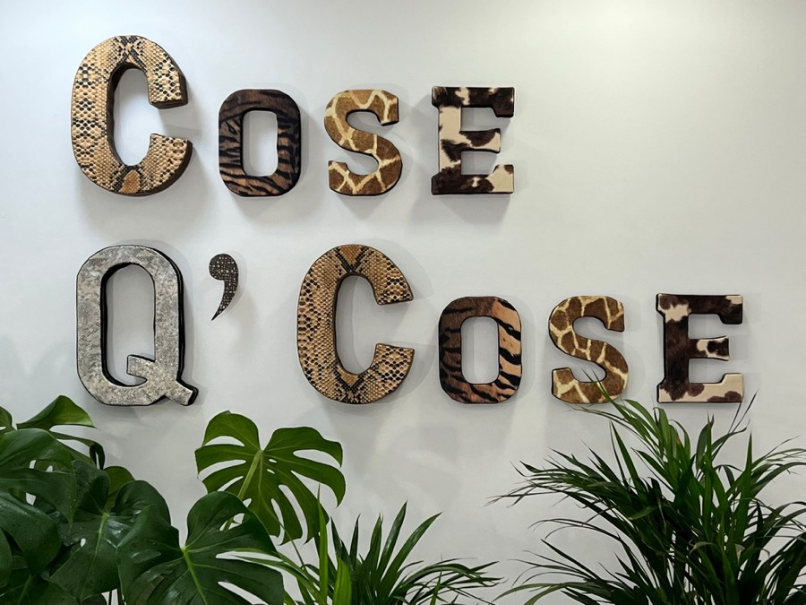
Ressenyes reals de Google de clients de Can Baró, el Guinardó i rodalies.
«Es ya el segundo vestido de boda que llevo y no puedo estar más contenta con
el resultado. Además, ahora que hay servicio a domicilio es todavía más cómodo. Súper profesional,
atento y se nota que le gusta mucho lo que hace.»
«Entendió perfectamente todo lo que quería, me dio sugerencias y quedó
increíble. Un servicio excelente, muy profesional y de total confianza. Y ahora incluso viene a tu
casa, ¡es perfecto!»
«Ya llevamos varias veces pidiendo distintas cosas — bolsas de tela
personalizadas bordadas — y lo cierto es que trabaja muy bien. Rápido, atento y encantador; se
adapta a los tiempos que necesitamos.»
«Llamé por un arreglo urgente de un bikini al que la lavadora había arrancado
una tira. Aunque parecía imposible, lo resolvió en menos de una hora y de manera excelente.
Recomiendo sin duda.»
Escriu-nos i organitzem la recollida de la teva peça o el teu encàrrec personalitzat.
Truca'ns: +34 627 39 87 39
Millor amb cita prèvia: així organitzem la recollida a la teva mida.
Carrer del Baró de Sant Lluís, 37
08024 Barcelona (Can Baró, Horta-Guinardó)
| De dilluns a divendres | 10.00–14.00 · 15.00–19.00 |
| Dissabte i diumenge | Tancat |